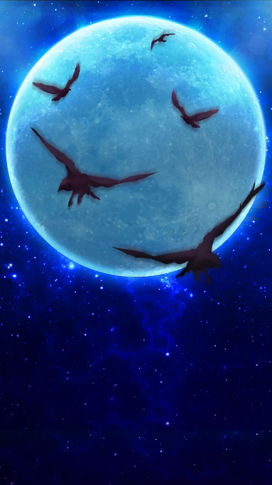
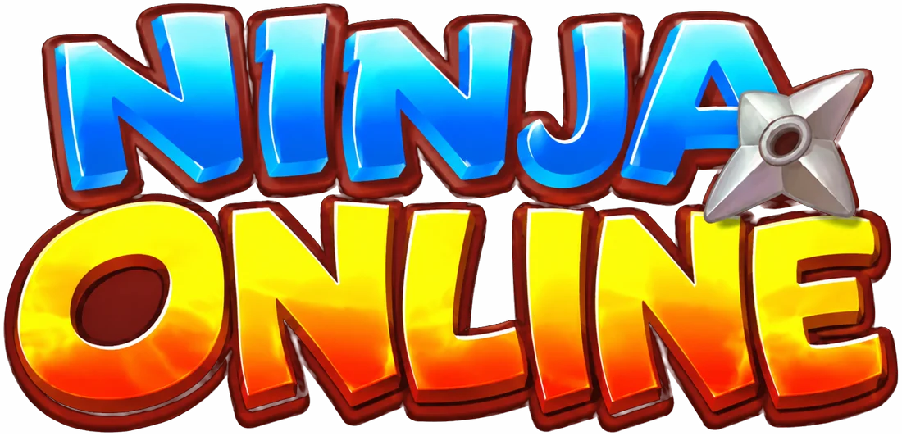
The old ninja card game from 2015 is playable again, for free.
The wiki has every shinobi, ninjutsu and stageWhat is this?
A ninja card game for Android that came out in 2015. It went by a few names, and most players know it as Hello Bro or Ninja Online. The official servers went offline years ago.
We revived it with a new server, so the game can be played again, with the same cards, story, events and prices as before. The only difference is that top-ups are free. Build a team, work through the story, fight other players in the Arena and Country War, or start an Akatsuki guild with friends.
493 shinobi to collect, 1 234 story stages, 91 ninjutsu, and top-ups cost 0 €.
Strongest players
The top 10 of the No.1 Shinobi list in the game, by team attack. Tap a name to see their team.
- The list shows up when the server answers.
Today in the game
Loading…
Players online
This week's events
The events take turns, so every one of them comes round each week. Each shows its own countdown in the game's Event menu.
What's in the game
Collect shinobi
Hundreds of cards, from 1 star up to God cards. Level them up and give them gear and ninjutsu.
19 story chapters
From the Shinobi Exams all the way to Madara's revival. 1 234 stages, and every boss brings its own team.
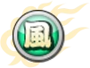
Arena and Country War
Fight other players for rank, steal seals, and help your nation win the war.
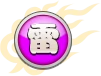
The original events
Lucky Wheel, Millionaire, Ninja Treasure, Limited Super Ninja, the festivals and more.
Akatsuki guilds
Team up with friends, take on the world boss together and climb the guild ranking.
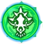
Grow stronger
Breakthrough, Eight Gates, pets, reincarnation and sage growth for when your team gets strong.
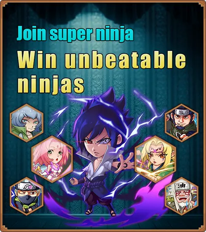
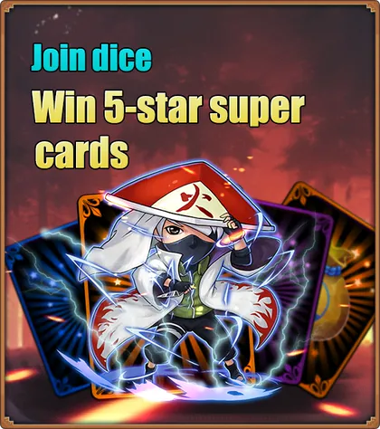
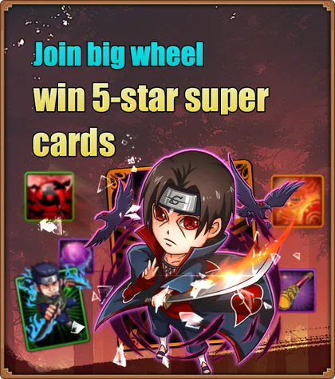
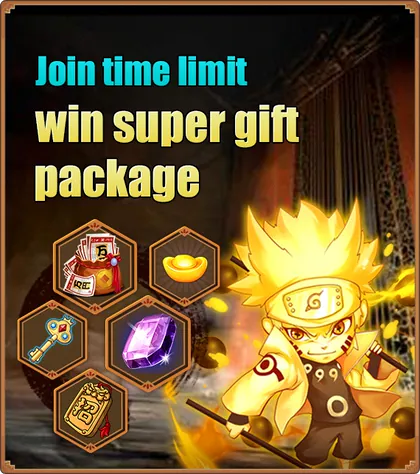
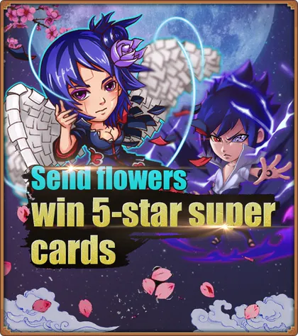
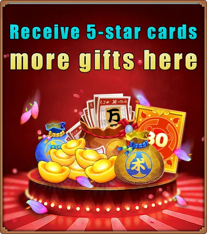
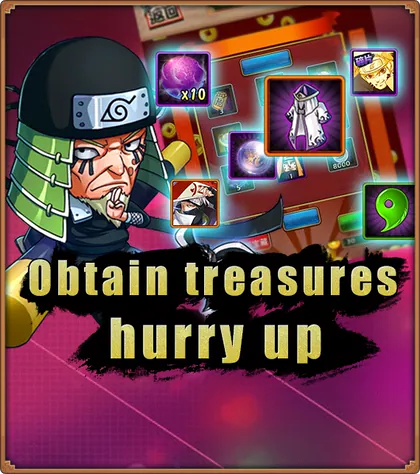
A few of the god cards
Screenshots
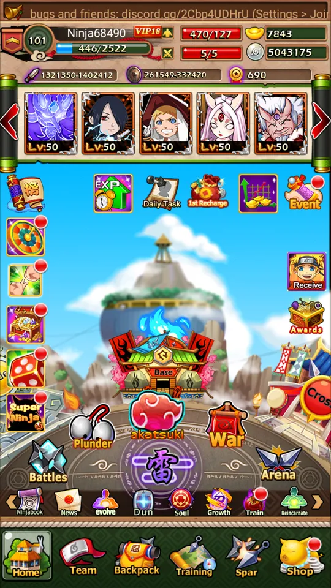
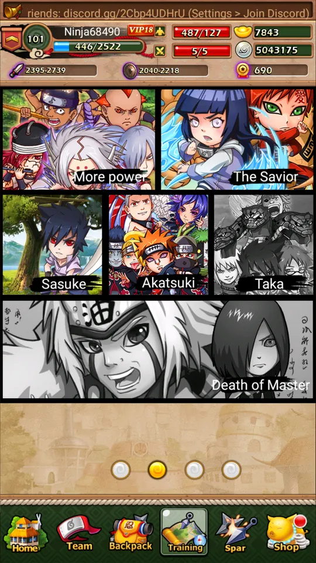
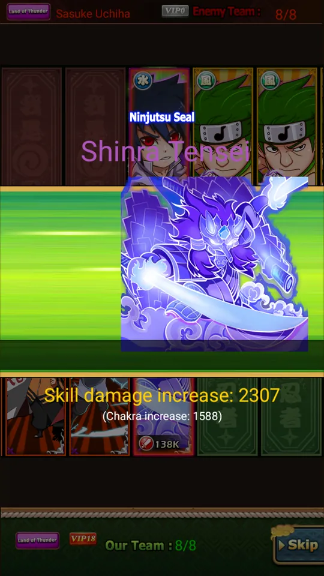
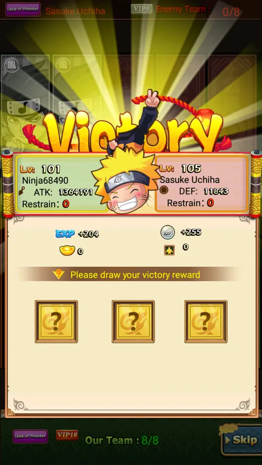
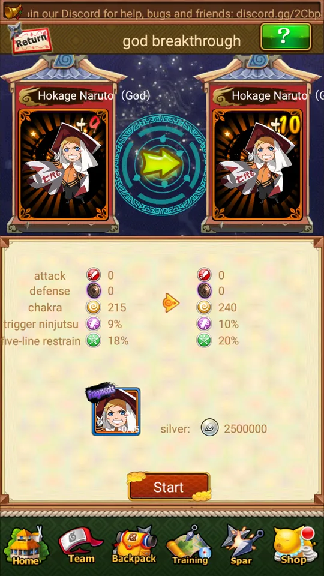
How to play
-
Download the game
One file that works on Android phones and in BlueStacks on a PC. It connects to our server by itself.
Download HelloBro-ninjaonline.xapk · 127 MB -
Install it
On a PC, install BlueStacks 5 and drag the file onto it. For a phone, connect it to a PC with a USB cable and use our installer.
Install guide -
Play
Open Hello Bro, tap PLAY, then pick your nation and your first ninja. Stuck? Ask us on Discord.
Get help
Questions
Is Hello Bro still playable?
Yes. The official servers went offline years ago, but the game runs again on our server. Download the game file, install it and play.
Is this the same game as Ninja Online?
Yes. It is the same app with the same cards and story. The game went by a few names, and most players know it as Hello Bro or Ninja Online.
Is it free?
Yes. Everything is free and top-ups cost nothing.
How do I play it on a new phone?
Download the game file from this site and install it from a PC with a USB cable, using our installer. It works on new Android phones too. Install guide →
Can I play on a PC?
Yes. Install BlueStacks 5 and drag the game file onto it.
Is there an iPhone version?
No. The game only exists for Android, so on a computer you play it in BlueStacks.
Can I get my old account back?
No. The old accounts were kept on the official servers, and those are gone, so everyone starts a new character.
Where do I get help?
Ask on our Discord, or mail contact@ninjaonlinereborn.com. Discord →
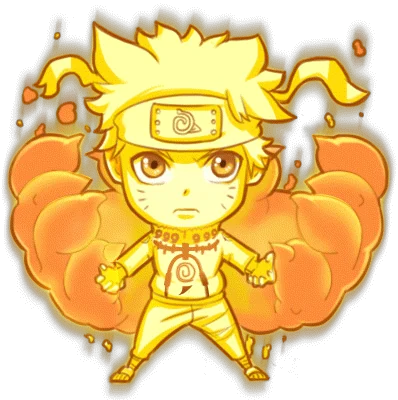
Questions?
Ask on our Discord. Updates get posted there too, and most players hang out there.
Keep the server running
The game stays free for everyone. If you want to help pay for the server and this website, you can support us on Patreon. Supporters get a Discord role and an early look at updates, never anything inside the game.
Support us on PatreonThank you, Shinobi Elders: